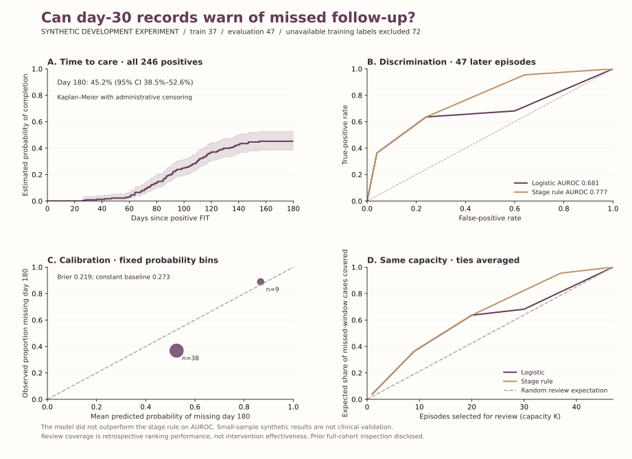

本轮实际拟合了 L2 正则化 Logistic 回归，并增加 Kaplan–Meier 时间分析。二者基于同一份原始 5,000 人合成队列，没有重生成更容易预测的数据。
Logistic 在 47 位后期病例上的 AUROC 为 0.681；固定流程规则为 0.777。这次模型的排序表现没有超过规则。它比固定概率基线的 Brier 更低，但不能因此宣称总体优于规则或适合临床使用。
本实验的价值是做出了可复核的“预测时点 → 特征 → 模型 → 时间隔离评估 → 相同工作容量比较”流程。当前结果也明确揭示了数据规模和生成逻辑的限制。
站在 FIT 阳性后第 30 天结束时，只看仍未记录结肠镜的病例，预测其第 180 天结束时是否仍无完成记录。目标为未按时完成，不是癌症风险、永久失访或患者“不配合”。
只使用四个当时可见的流程字段：转诊、接诊确认、预约，以及当时已经知道的超窗预约。未来的检查、病理、最终结案一律不作为输入。障碍和责任人没有记录日期，不能保证当时已知，因此排除；人口特征也未用于这个模型。
157 个成熟阳性病例中，1 人在第 30 天前已完成，不进入预警人群。剩余 156 人按阳性日期切分，并避免拆开同一天。
| 部分 | 人数 | 说明 |
|---|---|---|
| 训练 | 37 | 阳性日期 2025-06-24 至 2025-09-11；完整 180 天标签在模型冻结前可用 |
| 时间间隔剔除 | 72 | 在最早预测日之前尚未具备完整标签，不能训练 |
| 后期评估 | 47 | 阳性日期 2026-02-10 至 2026-05-10；其中 22 人未按时完成 |
模型于模拟日期 2026-03-12 冻结；后期预测日范围 2026-03-12 至 2026-06-09。不能仅将病例按日期排序，就用当时尚未发生的训练结局。此前已经查看过全队列，所以准确表述是“开发阶段回溯时间评估”，不是盲法外部验证。
模型使用 L2、C=1、lbfgs，方案先写定，未根据评估成绩调参或选择模型。训练仅 37 人，无法支撑复杂模型或可靠的临床性能判断。
| 方法 | AUROC ↑ | Average precision ↑ | Brier ↓ | Log loss ↓ |
|---|---|---|---|---|
| Logistic 回归 | 0.681 | 0.686 | 0.219 | 0.624 |
| 固定流程阶段规则 | 0.777 | 0.716 | — | — |
| 训练集总体概率基线 | 0.500 | 0.468 | 0.273 | 0.739 |
规则分数仅用于排序，不能把它当概率来计算 Brier。AUROC 衡量排序，Brier 衡量概率误差；应结合校准与工作容量一起读。
Logistic AUROC 的固定预测重抽样 95% 区间为 0.519–0.835；Brier 为 0.183–0.260。这些区间不包含训练样本变化和方案选择的不确定性，也没有证明两策略差异显著。
模型和规则各选 10 人时，均覆盖 8 / 22 个后来未按时完成的病例，覆盖率 36.4%。每 10 个名额中有 8 个对应后来未按时完成的病例。这不等于能通过干预挽回 8 人。
分数有并列，表格用患者 ID 打破并列；在边界并列中随机选择的期望覆盖人数为模型 8.55、规则 8.55。看板可改变容量 K，查看两种排序的覆盖曲线及对应患者。
| 预测概率区间 | 人数 | 平均预测概率 | 实际未按时完成比例 |
|---|---|---|---|
| 33%–67% | 38 | 52.5% | 36.8% |
| 67%–100% | 9 | 86.7% | 88.9% |
当前使用预先固定的三个概率区间；空区间省略。图表仅作小样本校准诊断，未在评估集上重新校准模型。
| 输入 | 拟合系数（log-odds） |
|---|---|
| 第 30 天前已开转诊 | -1.3301 |
| 第 30 天前已确认接诊 | -0.6360 |
| 第 30 天前已预约 | 0.0469 |
| 第 30 天已知预约日期超过第 180 天 | 0.0000 |
这些是合成训练数据中的预测系数，不是因果效应。训练集中“已知超窗预约”没有变化，模型无法学习其作用；该项系数为 0。已预约的系数接近零且略为正，也不表示预约增加风险。这正是小样本、相关流程变量和合成设定的限制。
Kaplan–Meier 使用全部 246 个阳性病例，记录到的检查为事件；未完成者在观察日或阳性后第 180 天截尾。事件共 88 个，180 天前截尾 72 个，在 180 天截尾 86 个。
估计的 180 天累计完成概率为 45.2%，点位 95% 区间 38.5%–52.6%。它与成熟队列 71/157 的完成率碰巧接近，但分母处理不同。该方法依赖独立行政截尾假设；当前数据未建模死亡等竞争事件。不能将“不再观察到”当成确认失访。
当前生成器主要按设定概率推进流程，缺少有时间戳的联系结果、取消/改期、内镜资源容量、跨机构记录回传等信息。模型能够学习的主要就是这些已写入生成器的关系。
进一步的技术提升应先建立独立版本的事件模拟器，分开“患者实际状态”和“系统可见记录”，再测试系统能否识别不同断点、处理记录延迟，以及在不同资源情景下怎样分配导航任务。情景假设须先固定，再在未参与设计的种子和参数范围上评估；真实收益仍需要获批试点验证。增加生成样本数量只改善模拟实验精度，不创造真实临床证据。
复现：python3 scripts/build_models.py；python3 scripts/build_model_report.py。依赖版本见 scripts/requirements-models.txt。
方法来源：statsmodels 右截尾分析、Logistic 回归、数据泄漏、概率校准。本地实际软件版本已保存在结果中；文档所用 API 已对照安装版本检查。